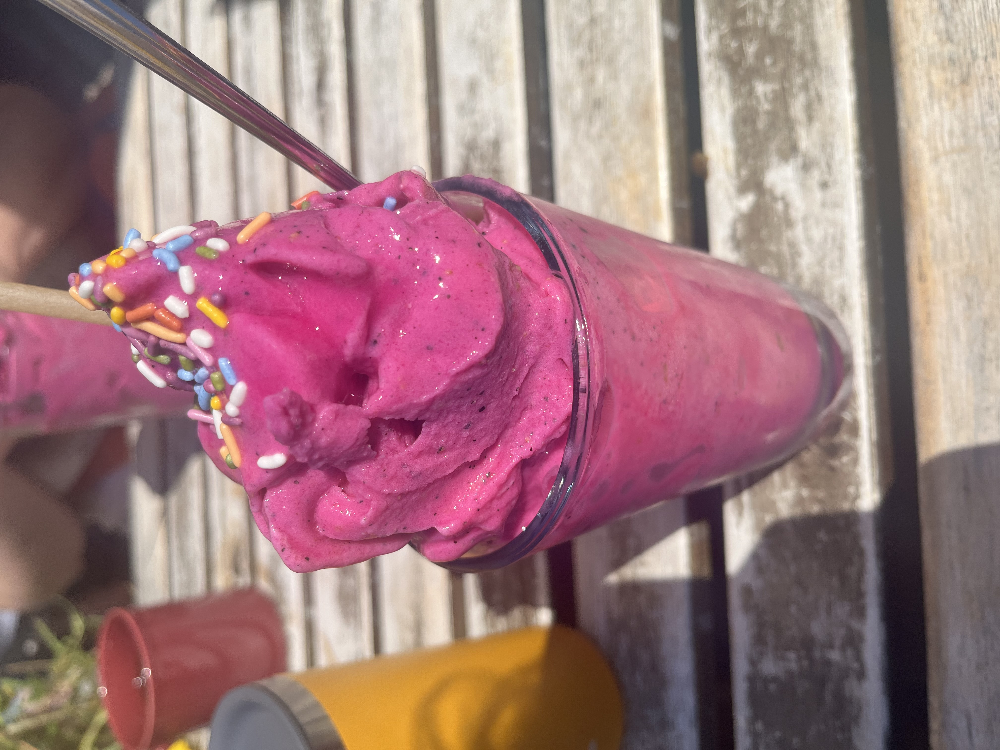
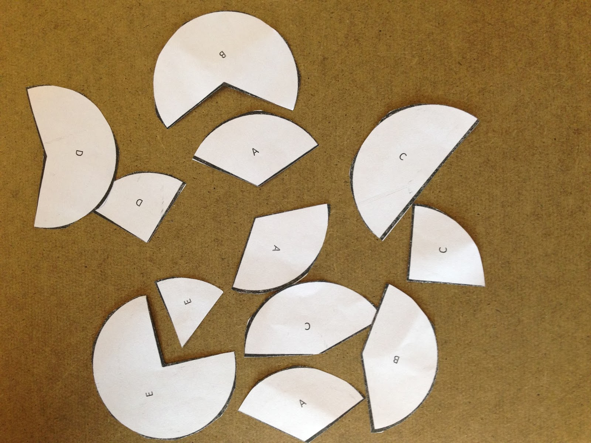

message <- "So long and thanks for all the fish"
year <- 2025
the_answer <- 42.5
earth_demolished <- FALSEIntro to STAT 331 / 531 + Intro to R
Week 1 Day 1
Tuesday, September 24
Today we will…
- Welcome to Stat 331 / 531: Statistical Computing in R
- Introductions (Me + You)
- Course Layout
- Basics of R
- Group collaboration warm-up
- Data wrangling / visualization puzzle
Introductions
Hi, I’m Dr. Theobold!
I am originally from Colorado, but went to grad school in Montana.
My favorite things are being outside, drinking coffee, and watching women’s basketball.

. . .
I love cats!
I’ve been programming in R since 2014!
I absolutely love teaching this course!
On a personal note…
I prefer you refer to me as “Dr. Theobold”, or “Dr. T”, or “Professor Theobold.”
Please don’t call me “Allison” or “Professor.”
I use they / them pronouns. If you are not sure what this means, I’d encourage you to read more about gender identity and pronouns. 🙂

Our Classroom Learning Assistant!
We will be joined in class by Jasmine.
. . .
Jasmine is…
- a forth-year Statistics major pursuing a Data Science minor,
- originally from Irvine, CA,
- someone who loves sushi, hanging out with friends, watching Netflix, and working out.
You!
I am looking forward to reading your introductions on Discord!
Please read the intros of your classmates so you can discover who you will be learning with this quarter!
Course Layout
Beginning of the Week
- Look over the coursework page
- Read the required chapter(s)
- Watch the required video(s)
- Complete the Check-ins
- Review chapter content
- Ask clarifying questions
- Discuss example analyses
- Work in pairs to complete the Practice Activity
- Finish whatever remains of the Practice Activity
- Complete any additional reading / videos / Check-ins
End of the Week
- Debrief Practice Activity
- Warm-up review
- Start Lab Assignment
- Finish remaining problems of the Lab Assignment
- Complete Challenge Assignment
Labs & Challenges Due Sunday by Midnight
To keep everyone on track with the coursework, your Lab and Challenges are due by midnight every Sunday. You are permitted to request up to four (4) deadline extensions by filling out the deadline extension form.
R Basics
Data Types
A value is a basic unit of stuff that a program works with.
Values are allowed to have different data types:
. . .
- logical / boolean: FALSE / TRUE or 0 / 1 values.
. . .
- integer: whole numbers.
. . .
- double / float / numeric: decimal numbers.
. . .
- character / string - text values.
Variables
are names that refer to values.
A variable is like a container that holds something - when you refer to the container, you get whatever is stored inside.
We assign values to variables using the syntax
object_name <- value.- This can be read as “object name gets value.”
. . .
Data Structures
every element has the same data type
Vector: a one-dimensional column of homogeneous data.
Matrix: the next step after a vector - it’s a set of homogenous data arranged in a two-dimensional, rectangular format.
elements can be of different types
List: a one-dimensional column of heterogeneous data.
Dataframe: a two-dimensional set of heterogeneous data arranged in a rectangular format.
Indexing
We use square brackets ([]) to access elements within data structures.
- In R, we start indexing from 1.
vec[4] # 4th element
vec[1:3] # first 3 elementsmat[2, 6] # element in row 2, col 6
mat[ , 3] # all elements in col 3li[[5]] # 5th element
li$elementName # all elements in "elementName"df[1, 2] # element in row 1, col 2
df[17, ] # all elements in row 17
df$colName # all elements in the col named "colName"Logic
We can combine logical statements using and, or, and not.
(X AND Y) requires that both X and Y are true.
(X OR Y) requires that one of X or Y is true.
(NOT X) is true if X is false, and false if X is true.
. . .
x <- c(TRUE, FALSE, TRUE, FALSE)
y <- c(TRUE, TRUE, FALSE, FALSE)x & y[1] TRUE FALSE FALSE FALSEx | y[1] TRUE TRUE TRUE FALSE!x[1] FALSE TRUE FALSE TRUEGroup Programming Warm-up
Broken Circles
To set the stage for your future group collaborations, we will complete an activity that explores how working in groups can be more / less successful.
Let’s start by dividing the class into groups of 6 students.

Activity Guidelines
- No talking or other noises!
- No pointing or hand signals!
- No taking pieces. You may only give pieces to others.
Your group is finished once everyone has a complete circle.
Discussion
- What do you think this game was about? What was its purpose?
- What did your group did that made you cooperate more successfully?
- What did your group did that made cooperation harder?
- What are some behaviors that could be implemented in the future to make cooperation easier?
A Data Puzzle
A Data Puzzle
Arrange the different pieces (tables and graphs) based on the actions that led to each new table / graph.
. . .
Once you have arranged each of the tables and graphs, answer the following questions:
- What is the most common type of work location - remote or in-person?
- Does work location type vary by company size?
Groupworthy Data Science
Groupworthy Data Science
The purpose of the study is to understand how an instructor’s pedagogy impacts the equity of group collaborations, specifically as they relate to pair programming.
Consent to Participate
If you agree to participate…
you will be recorded once a week for 10-weeks while participating in pair programming to complete collaborative tasks.
you will complete a pre- and post-survey about your prior computing experiences and your attitudes toward data science.
. . .
Your participation in this research will not affect your course grade.
. . .
Consent Form
Please complete the consent form (https://forms.gle/oax73hoe7uRSVLYw8) by Monday, 9/30.
Before class on Thursday…
Before class on Thursday…
Complete the Version Control coursework
Check-ins 1.6 - 1.9: Getting version control set-up
- Due Thursday (9/26) by the start of class
Introduce yourself on Discord!
- Due by Friday (9/27)